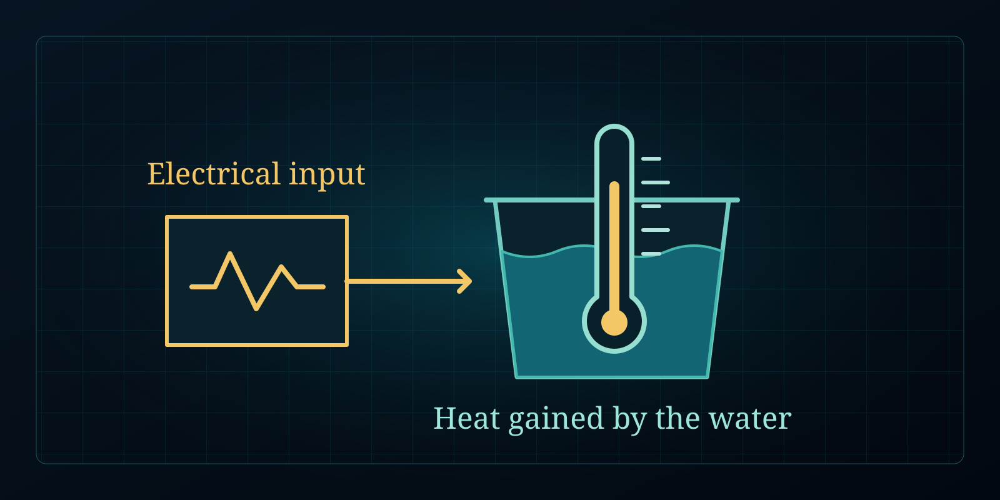

RANDALL YOUNG · EXPERIENCE BEFORE EQUATION
CORE 10
A practical science and engineering curriculum that starts with something you can see, measure, and investigate.

Start here
Heat a measured amount of water and record its temperature rise. Compare the heat it gained with the electricity the microwave used. Which number tells you what happened to the water, and which tells you what you paid for?
Microwave water heating handoff packet · materials, method, calculations, and a one-run record. This is a documented reference experiment. The packet does not yet record an independent handoff run.
Three ways into CORE 10
- Kitchen Inquiry Lab · turn everyday heating, cooling, and other household phenomena into experiments.
- One Cup Chemistry · use the same small toolkit to study solutions, cooling, conductivity, and more.
- NOTHING IS FREE / Personal Energy Laboratory · follow energy through batteries, motors, heating, and household costs.
Guides and downloads
- Measured Energy Teacher Guide · PDF
- One Cup Chemistry student lab book · PDF
- One Cup Chemistry teacher manual · PDF
- CORE 10 idea record · design rationale and measurement ladder